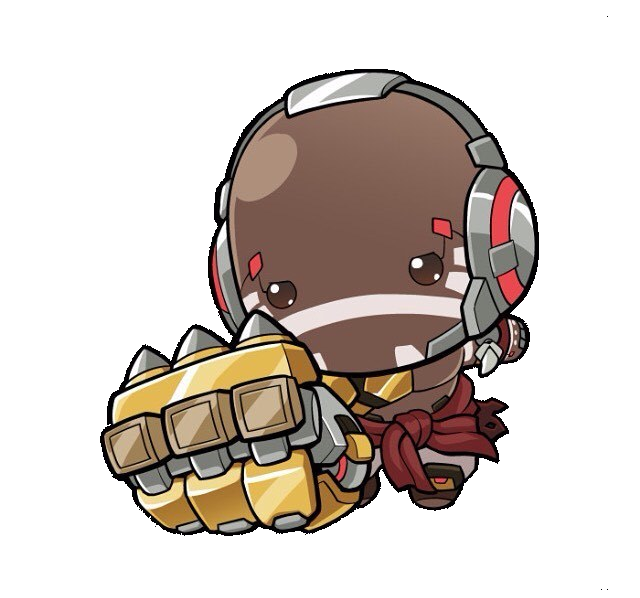

Bored of tryharding? Try the Toko Roulette!
Dev Notes: Doomfist Chibi is the best chibi!
Season 6 Update Release Date: August 17th or earlier!

Normal Challenges:
- Strimmer play Tank! - You must play a Tank Hero.
- Strimmer play DPS! - You must play a DPS Hero.
- Strimmer play Support! - You must play a Support Hero.
- Gun Control - You must play a hero that doesnt use a gun.
- Girl Power - You must play a female hero.
- Boy Power - You must play a male hero.
- Modern Warfare - You must play a hitscan hero.
- Projectile Bomb - You must play a projectile hero.
- Chivalry - You can only use melee and/or melee abilities.
- Crab Rave - You must only move with A and D.
- The Great Wall of Overwatch - You must play a hero with a shield.
- Raid Boss - You must play a Tank Hero and mitigate over 5K Damage.
- Ultra Marksman - You must play a DPS Hero and deal over 8K damage.
- Angel from Above - You must play a Support Hero and heal over 8K damage.
- Raid Boss Mk. II - You must play a Tank Hero and deal over 5K Damage.
- Angel from Above Mk. II - You must play a Support Hero and deal over 6K damage.
- OW1 Doomfist - You must play Doomfist as if he was still a DPS. You're not allowed
to use Power Block.
- Les go! - You must play your most played hero.
- FUCK! - You must play your least played hero.
- Despair - You must set your Render Scale to 50%.
- Colorblinded - You must set the color blind filter to Tritanopia.
- Team Swap - Switch enemy colors to allies and allies colors to enemies.
- Hooked In - Play Roadhog and hook at least 2 people off the map. If map has no pits,
roll next.
- Mr President Strat - You must play Doomfist and protect your teammates with your
life.
- Echoes Below - You must play Echo and duplicate a Support, DPS and Tank in the same
match.
- The Spawn of Satan - You must play as Mercy and only pocket a DPS.
- OW1 Bastion - You must play as Bastion and whenever you use your turret you're not
allowed to move.
- Content - You must play Doomfist without using Ult, Slam or Power Block. Only Punch
and Gun.
- OW1 Orisa - You must play Orisa and never leave the objective and capture/push it
with your life.
- The Key To Defeat - You can pick any hero. You must switch the ability keybinds to
the first letters of the first message you see in chat.
- No Sights - You must play either Ashe, Widowmaker or Ana. You're not allowed to
scope.
- Pushover - If this next map is Push, you're not allowed to leave it. If it isnt, you
can skip the challenge.
- Bird Tank - You must let 'gbiirdle' play Tank for the round.
- Back to its Roots - You're only allowed to use your primary fire.
- Deadly Machine - Hold your primary fire for the entire round.
- Copycat - You must play Tank. Whatever character the enemy tank chooses, you must go
as them when you die.
- No Sights - You must play either Ashe, Widowmaker or Ana. You're not allowed to
scope.
- Gratitude - Each time you pick up a health pack, you must look at it and thank it
for the healing.
- OW1 Sombra - You must play Sombra and you're not allowed to hack while invisible.
- Strat Chaos - Roll for 3 compatible strats. Whatever you get, you have to do all in
Seasonal Challenges
- Wrath of the Demon Lord - You must play Reinhardt and you're only allowed to use
Fire Strikes and Ult.
- Gladiator Pride - You must play Junkerqueen and only duel the other tank. You're not
allowed to cause damage to DPS or Support.
- Flight of the Griffon - You must play Orisa and get at least 2 people off the map
with your ult.
- Tumbling Hive - You must play Wrecking Ball and protect the supports at all cost.
- Slimy Skills - You must play Echo and duplicate only the weakest opponent of the
enemy line up.
- Knight Honor - You must play Genji and defend the tank at all cost.
- Science or Sorcery? - You must play Mei and you're only allowed to cause icicle
damage when the passive activates.
- Demon Queen - You must play Pharah and knockback at least 2 enemies into the depths
of hell.
- Aztec Death - You must play Reaper and you're not allowed to use Wraith Form.
- Special Delivery - You must play Sojourn and every time you hit somebody with a
Railgun shot, you must say 'Here's your coffee!'.
- Puppet Strings - You must play Sombra and stop at least 1 Support Ult with Hack if
applicable.
- Wizardy for Dummies - You must play Symmetra and get 5 kills. You're only allowed to
use the turrets.
- Biolitic Shock - You must play Torbjorn and get 3 hammer kills.
- Nature's Call - You must play Widowmaker and only snipe from patches of grass if
applicable.
- No Good Rogue - You must play Kiriko and you're not allowed to heal.
- Yes, Good Cleric - You must play Lifeweaver and you're only allowed to heal.
- A Bard Show - You must play Lucio and sing all your sentences for the remainder of
the match.
- Thicc Thighs Save Lifes - You must play Mercy and talk in a e-girl voice for the
remainder of the match.
- The Black Plague - You must play Moira and you're only allowed to use damage
abilities.
- The Stars Said So - You must play Zenyatta and you're not allowed to use Discord
Orb.
- Big Elfin' Deal - You must play Tracer and stick all of your pulse bombs.
- Tropical Beating - You must play Doomfist and you're not allowed enter or touch any
shadows or dark areas in the map.
- Strat Spell - You must do the inverse of the next challenge if applicable.
- Signature Move (Volleyball) - You must play Winston and do at least 2 self-passes
into a spiked goal.
- Echoes Below - You must play Echo and duplicate a Support, DPS and Tank in the same
match.
- Bonus Balls! (Lucioball Remix) - Score at least 3 bonus balls before the match ends.
- Cheater (Volleyball) - You must play Echo and you're not allowed to touch the
ground.
- Boostio!! (Lucioball) - Score at least 2 goals using your ult.
- Super Caster (Volleyball) - You must talk in a announcer voice for the remainder of
the match.
- The Worst Tactic (Lucioball Remix) - Score at least 2 goals using only your melee.
You're not allowed to use the Boop.
- 'Genji is OP' (Volleyball) - You must play Genji and you're not allowed to use your
dash.
- Goalie Only (Lucioball) - You're not allowed to leave the goal at all. Defend
everything that comes at you!
- Junior League (Volleyball) - You must play Widowmaker and try your best to win.
Master Challenges
- Blinded - You must play blindfolded.
- Final Stand - You must play standing up.
- Inverse Gamer - You must play with your headphones, keyboard and mouse turned upside
down.
- Switch It Up - Start out with Mouse and Keyboard. Once you die, switch to
controller. If you die again, switch back. Rinse and repeat.
- 'Heal Me!' - You're not allowed to heal from Health Packs, only Supports.
- The Doomfist King - You must play Doomfist, get over 20 kills and 5K mitigated
damage.
- Master Strat Chaos - Roll for 1 strat in each 'quickplay' category until they are
all applicable. Do them.
You should also watch...
Other Toko Socials: